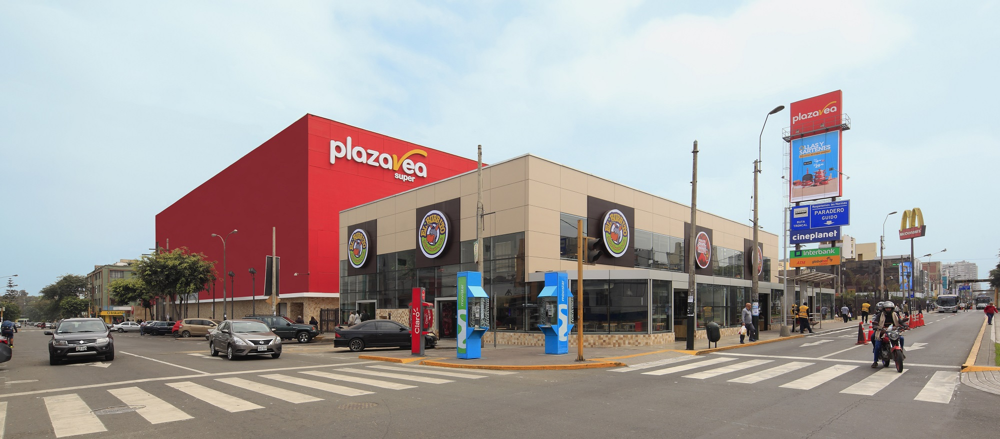

Capítulo 01
La Casa Hacienda de Don Manuel Risso Diggione
Sobre lo que hoy es Av. Arequipa 2201 funcionó durante el siglo XIX la Casa Hacienda de Don Manuel Risso Diggione. La propiedad se extendía como parte del Fundo Lobatón y era, junto con la de su hermano Roberto, una de las haciendas más reconocidas de la zona.
Cuando Lima empezó a urbanizarse a mediados del siglo XX, esas tierras se transformaron — pero la memoria del lugar se quedó en el nombre del nuevo proyecto: Risso.
